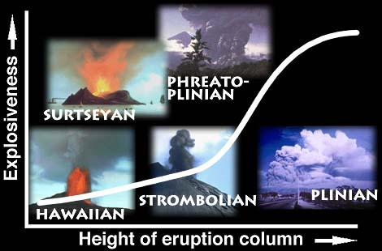

Volcano Terminology
The study of volcanoes, or Volcanology, includes many odd
terms. How many of these do you know?
- caldera
- vesicularity
- pahoehoe
- rheology
- lahar
The term nuée ardente, or "glowing cloud"
was first used by La Croix (1904)
in his description of the volcanic flows he observed in the
1902 eruption of Mt Pelée, a historically active volcano on
the island of Martinique.
There are many different types of volcanic eruptions and landforms. They can be classified according to the degree of "explosiveness" and the height of the eruption column:
Investigate each type by clicking on a picture

Volcano Web : Terminology
created by Lorrie Lava, lava@pele.bigu.edu
Volcanic Studies, Big University
last modified: April 1, 1995
URL: http://www.bigu.edu/web/term.html